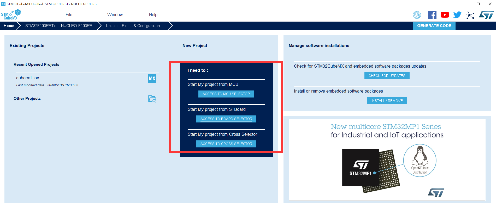

STM32学习笔记
所用板型：NUCLEO-F103RB
MCU：STM32F103RB
背景知识
这里是一些有的没的背景知识，归纳在这一部分。如果你很急，可以直接跳到step-by-step-guidance。
名词解释
Keil、μVision、MDK、Keil C51
-
Keil是公司的名称，有时候也指Keil公司的所有软件开发工具，目前2005年Keil由ARM公司收购，成为ARM的公司之一。
-
μVision是Keil公司开发的一个集成开发环境（IDE），和Eclipse类似。它包括工程管理，源代码编辑，编译设置，下载调试和模拟仿真等功能，μVision有μVision2、μVision3、μVision4、μVision5四个版本，目前最新的版本是μVision5。它提供一个环境，让开发者易于操作，并不提供能具体的编译和下载功能，需要软件开发者添加。μVision通用于Keil的开发工具中，例如MDK，PK51，PK166，DK251等。
因此，你寻找Keil IDE的入口是
UV4/UV4.exe。 -
MDK（Microcontroller Development Kit），也称MDK-ARM、Keil MDK、RealView MDK、Keil For ARM，都是同一个东西。ARM公司现在统一使用MDK-ARM的称呼，MDK的设备数据库中有很多厂商的芯片，是专为微控制器开发的工具，为满足基于MCU进行嵌入式软件开发的工程师需求而设计，支持ARM7，ARM9，Cortex-M4/M3/M1，Cortex-R0/R3/R4等ARM微控制器内核
从上图可以看出，MDK Core 又分成四个部分：μVision IDE with Editor（编辑器），ARM
C/C++ Compiler（编译器），Pack Installer（包安装器），μVision Debugger with Trace（调试跟踪
器）。
J-Link、ST-Link、ULink、JTAG、SWD、SWIM
-
J-Link是德国SEGGER公司为支持仿真ARM内核芯片推出的JTAG仿真器，很多ARM芯片的接口协议是JTAG，JLink一端接电脑USB接口，一端接CPU的JTAG接口，JLink充当的作用就是USB转JTAG，支持JTAG和SWD两种模式。
- 可配合IAR EWAR，ADS，KEIL，WINARM，RealView等集成开发环境；
- 支持ARM7/ARM9/ARM11，Cortex M0/M1/M3/M4，Cortex A5/A8/A9等内核芯片的仿真；

-
ST-Link是ST意法半导体为评估、开发STM8/STM32系列MCU而设计的集在线仿真与下载为一体的开发工具，支持JTAG/SWD/SWIM三种模式。
- 支持所有带SWIM接口的STM8系列单片机
- 支持所有带JTAG/SWD接口的STM32系列单片机

-
JTAG（Joint Test Action Group，联合测试行动小组）是一种国际标准测试协议（IEEE 1149.1兼容），主要用于芯片内部测试，现在多数的器件都支持JTAG协议，ARM、DSP、FPGA等，JTAG接口的单片机用电脑USB下载调试程序，需要用到J-Link（USB转JTAG）。
JTAG有10pin的、14pin的和20pin的，尽管引脚数和引脚的排列顺序不同，但是其中有一些引脚是一样的
TDI，TMS，TCK，TDO，分别对应数据输入，模式选择，时钟，数据输出，复位管脚可不接。占用5个IO口。
-
SWD全称是Serial Wire Debug（串行调试），SWD模式下用JLink给我们的板子debug时，是用标准的二线DIO和CLK，RESET管脚可不接，当你频繁下载失败时，可接上RESET管脚再试。
占用2个IO口。
-
SWIM接口常见于ST的STM8系列单片机，ST-Link2与STM8连接只需要4根线，见表格。

开发方式
通过IDE开发
通常来说，STM32使用IDE进行开发的较多，使用IDE也较容易上手。
STM32支持若干种不同的IDE进行开发，官方文档给出的支持有：
EWARM v7.10.3 or later(a)
30-day evaluation edition
32-Kbyte Limited QuickStart edition (16-Kbyte limitation for Cortex M0)
MDK-ARM v5.17 or later(a)(b)
MDK-Lite (32-Kbyte code size limitation)
TrueSTUDIO Lite v5 or later(b)
No limitation
SW4STM32 v1.5 and later(a)
No limitation
EWARM指的是通常意义上的IAR，IAR Embedded Workbench for ARM。
其中MDK-ARM指的是通常意义上的Keil，即Keil MDK-ARM。
本文使用MDK527。
手动make开发（适合高级使用者）
笔者目前也不会，先提供一个链接以供参考。
基于寄存器开发与基于库开发
基于寄存器开发
在传统C51中通常对寄存器进行直接操作来实现功能，如设置端口电平为：
对STM32来说，当然也可以这么做。但是STM32的上百个寄存器，相比于51的二十几个，要一个个记住、单独操作不大现实，过于麻烦。所以通常来说，STM32的开发都是使用HAL库进行开发的。
基于库开发
- 传统的Keil ARM开发模式
标准库 - 通过STM的HAL以及CubeMx配置的模式
Step-by-step Guidance
在这篇笔记中，使用的是CubeMx + Keil MDK-ARM，使用HAL库进行开发的开发方式。
配置开发环境
-
MDK5（Keil µvision5），官方网站下载，本文使用的版本是MDK527。（当然可能还要破解一下）（当然也可以去各种X盘下载）
-
ST-Link驱动，在ST官网下载。
All the STM32 Nucleo boards include an ST-LINK/V2-1 embedded debug tool interface.This interface needs a dedicated USB driver to be installed.
-
MDK5相关于这几个处理器的固件包（Firmware Package），Keil官网下载/或者在Keil中使用Pack Installer。
-
STM32CubeMx，官方网站下载。
实现一个"Blink"
Blink相当于单片机编程中的Helloworld，它的目标就是让一个LED（通常是板载的LED）Blink一下。
下面展示使用CubeMX搭建工程，并在Keil中编译下载的方法：
一. 使用STM32CubeMX生成基础配置代码
-
打开CubeMx，在New Project区进入板型选择器。
 -
搜索相应的板子型号，双击搜索结果。

-
默认，选Yes。
-
点击每个引脚可以直接配置其输出方式。在这里由于我们没有需求，所以不用改动。
-
进入Project Manager。
-
设置工程的名字和路径。别忘了将IDE选择为MDK-ARM V5。
-
点击GENERATE CODE，生成工程！
-
这个时候工程已经生成好了，接下来点击Open Project，将工作转移到Keil。
二. 使用Keil编写程序
-
打开Keil主界面，这时候CubeMX已经帮我们配置好了一堆库文件，我们不用管他们。接下来我们只需做自己的事就行了。比如找到
main.c：
-
可以看到
main.c里这时候已经被CubeMx生成了一堆初始化代码，同样不用管：
找到main()函数：

- 在
main()函数里一堆初始化函数后的循环里加入Blink的功能代码：
HAL_GPIO_WritePin(GPIOA,GPIO_PIN_5,GPIO_PIN_SET); HAL_Delay(100); HAL_GPIO_WritePin(GPIOA,GPIO_PIN_5, GPIO_PIN_RESET); HAL_Delay(100);
这段代码对板载LED所在IO口每隔100毫秒进行写一次高/低电平，这里调用的全部都是HAL库的函数。
3. 编译、下载
先执行Build将代码编译，如果代码有Error或者Warning，会在下方的Build Output窗口产生报错信息。如果没有问题，那么将板子通过USB连接到电脑，可以进行Download了。这一步将代码烧到STM32板子的flash内。

提示烧写完毕：
这个时候再按一下板子的Reset按钮，就可以看到板载的LED闪起来了。
4. Debug
当然也可以进行（也是非常必要）的一步是debug。选择Debug菜单-Start/Stop Debug Session进入debug模式：
在这里可以像debug本机程序一样设置断点，单步执行等。在右下角Call Stack里可以监视程序的变量。
中断
Arduino-STM32
目前还没试验成功。
- 安装Arduino IDE[^]
- 工具-开发板管理器-安装Arduino SAM boards (Cortex-M3)
You must do this step, it installs the arm-none-eabi-g++ toolchain）
测试[^1]